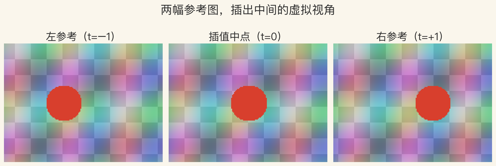
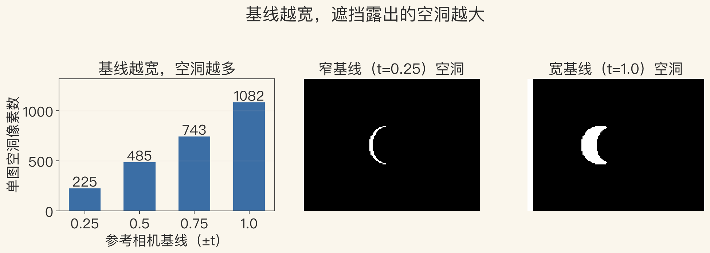
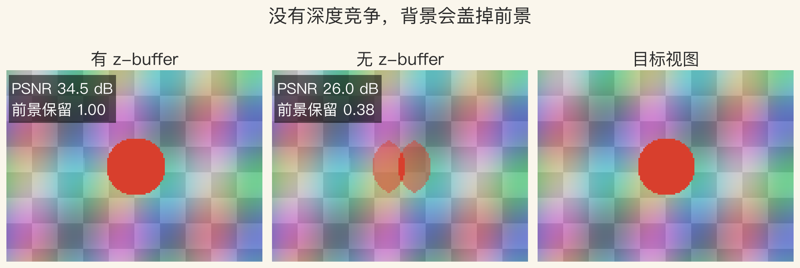

视图插值 · 最小问题
两幅图之间，算出中间视角
左右两幅参考图，各配一张深度图。
视图插值做几何 warp 加图像合并。
先把像素按深度搬到新位置，再合并。
这一集只算两幅图之间的虚拟视角。
依据：原书第 863–866 页；本集实验
三件事
参考图：给颜色
深度图：给每个像素的距离
相机位姿：给从哪儿看
本集数字来自二维合成实验
正课第一百二十一集
01 / 12
原书第 863–864 页 · 三件套
三件套：参考图、深度、位姿
书上第 863 页：一对参考图加预计算深度图。
书上第 864 页：两幅渲染图加深度图生成中间视角。
参考图给颜色，深度图给距离，位姿定位相机。
三样里深度图最难，误差会变成 warp 误差。
依据：原书第 863–864 页
缺一不可
没有深度：只能做二维变形
没有位姿：不知道该往哪挪
三样齐了：才有几何正确的中间视角
正课第一百二十一集
02 / 12
原书第 864 页 · 前向 warp
前向 warp：像素搬到哪里
用参考相机和虚拟相机的位姿，加深度图。
视差和深度成反比，近处挪得多。
合成场景前景视差 20 像素，背景 5 像素。
搬完会出现重叠和空洞。
依据：原书第 864 页；本集实验
x′ = x + (t_virt − t_src) × K / Z
K：焦距与基线合成的常数；Z：深度；视差单位是像素
正课第一百二十一集
03 / 12
原书第 864 页 · 遮挡竞争
z-buffer：谁挡住谁
多个像素可能落到同一个目标像素。
用 z-buffer 记深度，或从后往前画。
没有深度竞争，后画的背景会盖掉前景。
无 z-buffer 版本，前景保留只剩 0.381。
依据：原书第 864 页；本集实验
两种等价写法
z-buffer：每像素只留最近深度
从后往前画：近处最后覆盖
先画远再画近，结果一致
正课第一百二十一集
04 / 12
实验一 · 左中右
看图：中间那张是算出来的
左参考、插值中点、右参考，同一尺度。
中点不是左右平均，是逐像素搬过去再合并。
z-buffer 版本 PSNR 34.52 分贝。
前景保留 1.000。
依据：本集实验

左参考 / 插值中点 / 右参考｜程序生成，未用教材或论文原图
正课第一百二十一集
05 / 12
原书第 865 页 · 补洞
空洞与基线：越宽洞越大
一幅图有洞，用另一幅图补。
两幅都有值，按到两个源相机的距离混合。
基线越宽，前景和背景错开越多。
单图空洞从 225 涨到 1082 像素。
依据：原书第 865 页；本集实验
补洞的两条规则
一幅有洞：用另一幅补
两幅都有值：按相对距离混合
补出来的区域不是新观测
正课第一百二十一集
06 / 12
实验二 · 基线 vs 空洞
看图：洞在前景边缘
横轴基线，纵轴单图空洞像素数。
0.25 时 225，1.0 时 1082，单调上升。
窄基线是一条细月牙，宽基线是大月牙。
洞都在前景边缘。
依据：本集实验

基线 vs 单图空洞 + 窄/宽基线掩码｜程序生成，未用教材或论文原图
正课第一百二十一集
07 / 12
原书第 865 页 · 合并与曝光
合并：洞和接缝
书上第 865 页：洞用另一幅补，都有值按距离混合。
曝光差太大，补洞区和混合区会不一致。
左图亮度乘 1.12，PSNR 34.52 掉到 27.25。
下降 7.27 分贝，接缝肉眼可见。
依据：原书第 865 页；本集实验
几何之后是颜色
几何对齐：第一步
颜色一致：第二步
曝光和白平衡校正不能省
正课第一百二十一集
08 / 12
实验三 · z-buffer
看图：没有深度竞争，前景被吃掉
有 z-buffer、无 z-buffer、目标视图三张并排。
无 z-buffer 前景保留 0.381，PSNR 26.01。
背景把圆盘切成两块。
z-buffer 用深度决定谁覆盖谁。
依据：本集实验

有 z-buffer / 无 z-buffer / 目标视图｜程序生成，未用教材或论文原图
正课第一百二十一集
09 / 12
原书第 865 页 · 刚性/非刚性
真实图像还有哪些坑
刚性场景的锯齿可用两遍前向-后向算法改善。
非刚性场景可以用 view morphing。
真实图像还有曝光、裂缝、遮挡边界、非刚性形变。
本集合成场景只覆盖前两个。
依据：原书第 865 页；本集实验边界
先分场景，再选方法
刚性场景：几何 warp
非刚性场景：view morphing
完整系统：多视角重建
正课第一百二十一集
10 / 12
原书第 865–866 页 · 视角相关纹理
视角相关纹理：一个模型，多幅图
不给每幅图单独配深度，建一个 3D 模型。
按虚拟相机位置选不同源图。
按虚拟视角和源视角的夹角倒数加权。
源视角 −40°、0°、35°，虚拟 10°，权重 0.132/0.610/0.258。
依据：原书第 865–866 页；本集实验
夹角越小，权重越大
源视角：−40°、0°、35°
虚拟视角：10°
归一化权重：0.132、0.610、0.258
正课第一百二十一集
11 / 12
总结 · 下一集光场
总结：warp、z-buffer、blend
视图插值等于深度图 warp 加 morphing。
z-buffer 决定遮挡，补洞和混合决定洞和接缝。
基线越宽洞越大，曝光差会留接缝。
下一集：从两幅图之间走向四维光场。
依据：原书第 863–866 页
三个词
warp：按深度搬像素
z-buffer：决定谁挡住谁
blend：补洞与混合
正课第一百二十一集
12 / 12